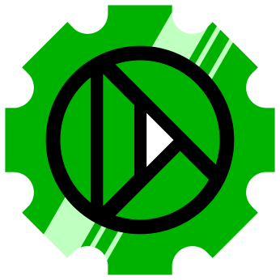
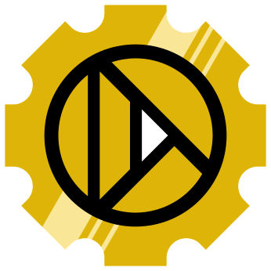

Whisk3D Editor opcional
Modelar, hacer el rig, animar, iluminar y renderizar
Tu juego o proyectola lógica, escrita enLua· se guarda en un .w3d
El Editor y la UI son opcionales. Un juego puede usar sus propias herramientas y su propia interfaz, y apoyarse en la capa que quiera. El Core es la base de todo.
↓

Whisk3D UI opcional
La biblioteca de la interfaz
BotonesMenúsTarjetasTextoÍconos
←
C++
Un juego sobre la UI
En C y C++, con la interfaz de Whisk3D UI y sus propias herramientas, sin el editor
↓
Whisk3D Core la base
La capa de abstracción: una sola forma de pedir las cosas, en todos los sistemas
GráficosSonidoArchivosEntradaRedLogsFísicaLua
←
C++
Un juego directo sobre el Core
En C y C++, con su propia interfaz y sus propias herramientas